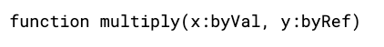

This page describes several programming techniques used in professional programming.
There are three main programming constructs
Code is executed line by line from the top to the bottom.
The same code is run multiple times. If the code is repeated a known number of times, this is called count controlled iteration. If not, then it is called condition controlled iteration.
Certain lines of code are only executed if a condition is met.
Recursion is where a subroutine calls itself. Here is a visual to explain recursion:
Recursion is used when the depth of a problem is unknown. This can be useful for searching trees, querying databases or even mathematical functions. For example:
This function calculates the factorial of a number using recursion. It does this by calling itself until the terminating condition is met. A terminating condition is the condition that stops the recursion.
Global variables are variables that can be referenced or edited anywhere in a program.
Local variables are variables that can only be referenced or edited within a certain code block.
Modular programming is the process of splitting large or complex programs into smaller, self-contained modules. A modular design makes it easy to divide tasks between a team, test or modify parts of the program individually, and improves the reusability of components – once a module has been tested, it can be used again.
When parameters are passed into a function or procedure, they can be passed by value or by reference. Passing a parameter by value makes a copy of the value to pass into the function, whereas passing by reference gives the address of the parameter.
An IDE (integrated development environment) is a program used to develop and debug code. Some examples include VS-Code, VS-Studio, IDLE, Vim, Atom, SublimeText, and Eclipse.